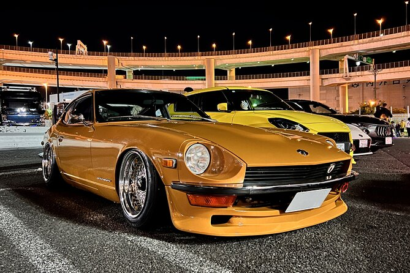
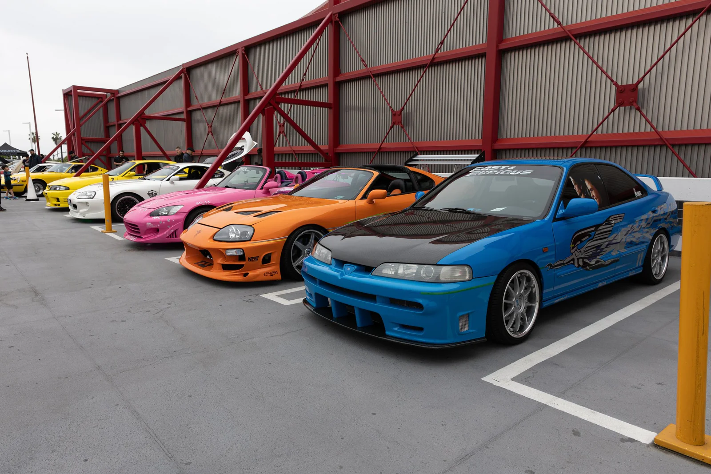

Noches de Neón y Motores: Sumergiéndote en la Cultura JDM de Tokio
Tokio no es solo la capital del sushi y los templos milenarios; es el corazón palpitante de una de las subculturas más fascinantes del mundo: el JDM. Para los entusiastas, ver un Nissan Skyline R34 o un Toyota Supra por las calles de Shibuya no es suerte, es el paisaje cotidiano de una ciudad donde el tuning es considerado una verdadera artesanía.
La Realidad Legal de las Carreras JDM en Tokio
Si cerrás los ojos y pensás en Tokio de noche, es probable que escuches el silbido de un turbo y visualices un Skyline cruzando la autopista Shuto. Pero, ¿qué tan real es ese mundo de Initial D hoy en día? La respuesta corta es que, aunque la pasión sigue viva, la ley en Japón no bromea.
Toyota Supra: La Evolución de un Mito, del Celica a la Leyenda del 2JZ
Si existe un auto que define la era dorada del JDM y que todavía hoy hace que los cuellos giren en las calles de Tokio, es el Toyota Supra. Lo que empezó como una variante de lujo del Celica terminó convirtiéndose en un ícono cultural capaz de humillar a superdeportivos europeos que triplicaban su precio.
Envianos un Email
Galeria de imagenes

